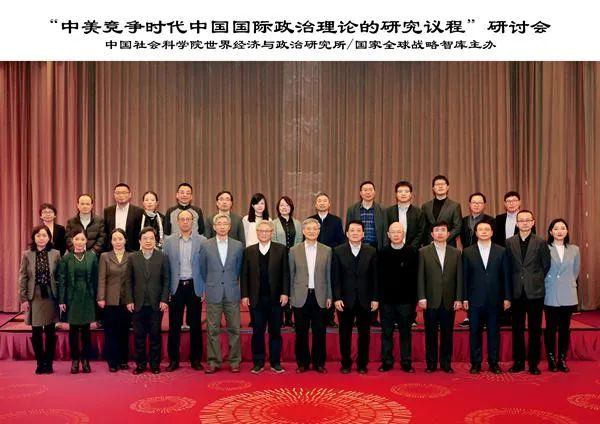
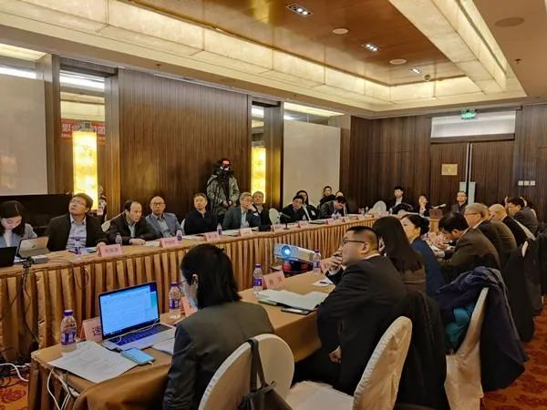

收录于合集
“中美竞争时代中国国际政治理论的研究议程”研讨会综述
2020年11月21日，由中国社会科学院世界经济与政治研究所/国家全球战略智库主办、国际政治理论研究室承办的“中美竞争时代中国国际政治理论的研究议程”研讨会在北京举行。来自中国社会科学院、清华大学、复旦大学、中国人民大学、外交学院、上海交通大学、南京大学和广东外语外贸大学的知名学者参加了研讨会。中国社科院世经政所所长、国家全球战略智库首席专家张宇燕研究员出席会议并致开幕词。

此次会议设有主旨发言、专题研讨和自由讨论等环节，参会学者围绕“中国国际关系理论的创新路径”、“国际政治的思想、秩序与规范”、“大国竞争的安全维度”和“大国竞争的战略、政治与经济维度”等议题展开讨论。
此次会议还探索了“线下会议+线上问答”相结合的办会形式，会前共收到1600余份线上参会申请，最终来自20多个国家和地区的1300多位国际关系、国际政治专业学者和学生受邀线上听会并在自由讨论环节与参会学者提问互动。研讨会网络直播当日累计观看人数近三万人。

开幕式和主旨发言环节由中国社科院世经政所国际政治理论研究室主任杨原副研究员主持。张宇燕研究员在开幕式致辞中对参加会议的各位同仁表示欢迎与感谢；指出在当前这个百年大变局的时代，召开这次会议有着非常重要的意义：研讨会的主题是理论研究议程，设置好议程，对于推进中国的国际政治理论研究非常重要。中国的国际关系实践给理论研究提供了丰富的研究土壤，中国学者在理论创新方面大有可为，希望各位同仁能在这个时代在理论创新方面都能有所建树。
在主旨发言环节，外交学院前院长秦亚青教授介绍并界定了交互涵化（Trans- acculturation）的概念，并将理论作为一种表象知识（Representational Knowledge），给出了交互涵化引发新理论的路径。
秦亚青教授首先回应了国际上对中国国关理论具有很强的文化实质主义（Cultural Essentialism）的批评。他提出，中国国关理论的发展是一种涵化过程，而不是对文化实质主义的坚持。他认为，涵化就是一种文化对另一种文化的影响；交互涵化是实质性的文化互动和相互影响。深层或渗透性的交互涵化有可能使两种文化在冲撞或者交融中产生包括理论在内的新的表象知识。他进而提出了引发新理论的路径：首先从双方的文化之中发现最根本的理念，然后观察这些理念（ideas）或者观念（concepts）是否存在不同之处。他强调，第二步很容易被当作一种文化实质主义而遭受批判，因此他提倡一种策略性文化实质主义（Strategic Culture Essentialism）。但他同时强调了多样性的重要，批驳了中国国关理论和中国学派的提出会造成知识上的脆弱性这一看法，认为这种脆弱性正是多样性的基础之一，而多样性是知识竞争的前提条件，只有知识竞争才能实现后续的知识繁荣或进化。他主张通过深层的交互涵化创造新的理论，并指出“中庸”在其中将发挥重要作用。
秦亚青教授在总结中强调，中国国关理论发展并不是要“一统天下”，也不是要把持话题，而是要实现五彩纷呈的状态和局面，这样学术才能繁荣，知识才能发展，新一代的学者才能有前途。
清华大学国际关系研究院院长、文科资深教授阎学通教授在其主旨发言中指出了当前中国国关学界存在的四条理论创新路径，批驳了“单位规划”、“归纳官宣”和“非西方”三条路径，提倡从观察崛起现象入手创新国际关系理论这一研究道路。他认为，应当首先去审视和观察事实与现象，通过与现有理论知识的比较找到无法解释之处，努力提出既能解释新现象又能解释旧现象的新理论，这样的理论才具有普世性和生命力。
阎学通教授从三种研究角度具体阐述了如何从观察崛起现象入手创新国际关系理论。一是聚焦中国崛起，把中国崛起当作研究的自变量或因变量。二是从共性或特殊性的角度展开研究，比如将中国崛起和历史上其它大国崛起进行比较，找到共性与特殊性。三是可以从政治思潮和学术理论两个不同的方面研究中国崛起带来的影响。
最后，阎学通教授重申了理论研究的客观性和个人自主性。他认为，沿着他人设定的研究议题研究不利于理论的原创性和创新性。他提出了评价理论的三个标准：一是不能解释当前客观现实世界的理论是虚假的；二是不能解释历史的理论是虚弱的；三是理论能解释的方面越多越好。他呼吁学界建立起对理论研究的共同标准，关注一个理论的可靠性、解释力与科学性。
复旦大学国际关系与公共事务学院唐世平教授的主旨发言题目是《探寻普世社会科学：来自“边缘”的折腾》。他首先解释了“边缘”的意涵，一是对欧美中心主义而言，中国学者处于“边缘”位置；二是个人学术路径“天然地”处在学术边缘。他总结了三种在“边缘”上“折腾”的常见策略：一是批评与解释，二是以地方性知识为目标，三是地方性知识普世化。
唐世平教授总结了自己选择上述研究策略的三点原因，一是对族群冲突疑惑，二是东方主义与反东方主义（anti- orientalism）的融合，三是长期受到自然科学的影响。而贯串他所有研究的核心思路是演化主义以及对时间和空间的限定。他认为，演化论至少是世界上最普世的理论之一，而时间和空间又同时具有足够的地方性和普世性。
最后，唐世平教授对青年学者和学生们提出了一些建议。他指出，如果想发展好的理论，那就不要甘于平庸，保持一点无畏，尊重但不膜拜权威。他提醒，不必刻意把自己定义为某一种学派（school）或范式（paradigm），应当多关注自己能解决什么样的问题。他认为，做综合的研究，需要广泛的知识和较小的生活压力，而对于发展强有力的（powerful）的理论而言，所掌握的知识的广度可能比起知识的深度要更有用。
专题讨论第一节的主题是中国国际关系理论的创新路径，由中国社科院世经政所全球治理研究室主任任琳副研究员主持。
广东外语外贸大学国际关系学院院长周方银教授认为中国国关学界正面临重大创新机遇，但这种机遇是否一定能推动理论出新，可能还需要更长期的实践。他指出，无论此次体系转型如何变化，诸如和平背景下国际秩序如何构建、数字时代的大国竞争是否会与历史上大国竞争有本质上的不同等都是促进理论创新的重要问题。
《世界经济与政治》副主编袁正清研究员认为，当前国关理论的发展呈现出一种从西方向非西方或者全球发展的形势，中国的国际关系学正成为全球国际关系学的重要组成部分。他认为，中国国际关系理论创新路径在某种程度上类似于欧洲的文艺复兴，即注重从中国自身历史和文化挖掘思想资源。他提出，需要进一步推动跨学科，大量借鉴其它学科的讨论，包括改革课程设计和人才培养模式，以更好地打开研究视域、提高研究水平。
清华大学国际关系研究院刘丰教授探讨了理论研究的特征和理论创新的主要路径。他认为，理论创造是一个取决于学者志趣的高度个体化的事业，具有非计划性、渐进性，并需要得到学术共同体的认可。他总结了五条理论创新的主要路径：第一，回应重大经验现象；第二，回答理论与经验相脱节的问题；第三，回应理论之间的争论；第四，找到理论研究的夹缝；第五，开发和引入新概念。
世经政所国际政治理论研究室主任杨原副研究员提出一种从国家行为多样性的角度实现国关理论创新的“非典型”路径。他认为，与自然科学的研究对象本质上存在相似性不同，社会科学的研究对象本质上是差异化的，因此包括国际关系学在内的社会科学理论的主要任务是发现和解释差异性。他提出了从现象和经验困惑入手、注重分类和推广普及统计方法三点理论创新建议。
《国际政治科学》执行主编漆海霞副教授在点评中认为，一个理论是否是好的理论，除了需要有很强的现实关怀外，还应该有对一些根本性规律的重大思考。她还认为，将理论创新的角度固定在体系转型这一点上，研究问题本身的生命力可能较短，她建议可以同时关注体系变化之后的一些情况。她指出，中国学者应该打通微观、中观和宏观层次理论，找到能够帮助整个学科创新的方向。
专题讨论第二节主题为“国际政治的思想、秩序与规范”，由世经政所国际战略研究室副主任肖河副研究员主持。
复旦大学国际政治系副主任陈玉聃副教授在发言中指出，从某种角度上说“国际”（international）或者“国际关系”一词本身带有某种现代性，因而如何定位现代之前的international就显得尤为重要。他还提出了一系列重要问题，例如为什么要做国际政治思想史的研究，如何构建非西方的国际政治思想传统，前现代的全球思想怎样和现代的国际政治之间产生关系和能否超越东西二元的视角等。他指出，一种理想状态是能够实现国际政治思想的融合，虽然这是一个非常难以完成的工作，但还是应该知其不可而为之。
世经政所国际政治理论研究室李隽旸副研究员提出在《伯罗奔尼撒战争史》中存在“两个”修昔底德——作为社论家的修昔底德和史家的修昔底德。她指出，这种身份冲突使得《伯罗奔尼撒战争史》对战争爆发原因的记叙和归因存在许多自相矛盾的地方。她提出了一种解释这种归因冲突的观点，即修昔底德可能受到了同时代希波克拉底医学派归因思路的影响。她最后做了两点评论，一是反对神话古人，二是反对将经验与事实做直接的类比。
中国人民大学国际关系学院田野教授指出，国际秩序可能存在一种新的类型，即国际礼治秩序。他强调，更接近秩序概念本质的国际秩序应当能够保持一定程度的稳定性。他将礼治秩序从中国的国家秩序推广到中国古代国家间体系和中国对东亚国际关系的秩序描述。最后，他通过回顾东亚和欧洲的历史，联系当前中美的战略竞争，建议在推进国际法治建设的同时，推进国际礼治建设。
复旦大学国际关系与公共事务学院陈拯青年研究员指出在一系列竞争背后还有关于价值正当性的竞争，如果从语言的角度切入，就表现为外交话语和说辞。他认为“说辞政治”就是在利用话语和各种社会情境、社会资源达到自利目的的一种政治过程，这是一个社会正当性相互制约的过程。他将新的话语说辞区分为内核和外围两部分，即实质性主张及其背后的某种价值的主张，并尝试把不同行为体在规范领域中的说辞策略类型化。
《外交评论》执行主编陈志瑞教授在点评中强调了研究的情境性。他认为，研究者可能囿于其所处时代，不敢提出问题、提出理论，或者不敢进行批评，也存在另一种太过超前于时代的可能，使研究者忽视历史情境以及研究者个人的时代情境，而去做简单的嫁接。他强调，分析、思考和评判理论都应该放置在历史的情境之中。
专题讨论第三节主题为“大国竞争的安全维度”，由世经政所国际政治理论研究室副主任郎平研究员主持。
中国人民大学国际关系学院尹继武教授认为私有信息对冲突关系的形成有着重要影响。他指出，观察国际关系事实，可能会发现跟既有理论逻辑的不一致，这个不一致产生了理论上研究问题的来源。他认为，中美近几年竞争过程中的经验事实跟过往关于冲突或战争起源的两种主流逻辑具有不一致性，他提出后续需要在理论命题、中美案例或其它国际危机或冲突案例中再继续深化关于私有信息和决心信号的有关研究。
清华大学国际关系研究院常务副院长孙学峰教授总结了过去十年在安全依赖这一研究议题上的进展与瓶颈。他认为，当前的安全依赖发生了很多变化，从研究推进的角度看，此时应当调整原先只强调单极的视角，而关注单极+等级。他认为这种转换最大的瓶颈在于，人们对单纯的单极没有认知、历史上没有任何参照，而此时区分安全依赖的作用，可能会推动相应的研究
中国人民大学国际关系学院宋伟教授指出，试图挑战国际基本规则现状的国家才是修正主义国家，规则竞争容易引发霸权国与崛起国、主导国与挑战国之间的战略竞争，但霸权国和主导国都可能是修正主义国家。他认为，当代修正主义国家的基本战略更多不是通过武力而是通过协商方式来建立新的基本规则，减少了修正主义可能导致的战争的发生。他最后指出，修正主义国家不等于是坏国家。
清华大学国际关系学系陈冲助理教授介绍了一项基于文本网络分析的研究。他指出，文本网络分析包含文本分析和系统网络分析两种研究方法。基于研究结论，他建议国内学界应与美国主流杂志交流与对话，关注他们的研究话题；同时，推动定量研究科学化，并鼓励国内学者积极开展合作研究。
《当代亚太》执行主编高程研究员在点评中指出，中国与美国的竞争将会与传统的争夺军事盟友的安全竞争不同。她认为，中美最后可能会形成两种发展道路和治理模式的竞争，这一模式竞争更有可能是看谁有示范效力，谁能吸引更多国家在发展道路和治理模式上跟随自己。
专题讨论第四节主题为“大国竞争的战略、政治与经济维度”，由中国社科院世经政所副所长冯维江研究员主持。
外交学院国际关系研究所聂文娟副教授指出，尽管国内学界目前对中美两极格局的认识还存在争论，但在东南亚地区，在很大程度上已经进入了中美两极格局的时代，地区议题的重点由此开始从过去的秩序维持变为秩序调整。她指出，在秩序调整的时代核心议题变化成两方面，一是旧秩序如何演变，二是如何创建新秩序。她建议从中美权力竞争层面、自由国际秩序本身的层面和人类社会的层面建立新的生产关系或新的秩序理念。
南京大学政府管理学院毛维准副教授认为，国际责任履行是大国政治逻辑的附属物，只有当大国愿意利用它时才会推动国家间的交流。他指出，轴心变动将明确地影响国际责任的履行，中国在这种情景里必然要遭受西方更为强大的政治或者安全方面的压力。他提出，国际责任履行中的历史变迁逻辑可能存在一个四十年的循环。
上海交通大学国际与公共事务学院黄琪轩副教授认为，一个国家参与大国技术竞争需要依赖庞大的市场规模，冲破以前技术的路径依赖，形成新的技术范式。他指出，竞争的大国往往都掌握过相关技术，但它不一定能赢得大国技术竞争，庞大的自主市场才是赢得大国技术竞争的关键。他认为，庞大的市场规模提供了打消耗战的资本、克服不确定性的能力、实现技术的累积的条件和实现可持续发展所需的足够的生产和消费的群体。
《世界经济与政治》编辑部主任徐进研究员在点评中提到，对地区秩序而言，可能旧秩序不会那么快结束、新秩序不会那么快到来，这种和平转型比起战争转型要缓慢得多。他呼吁学界以“崛起困境”替代“修昔底德陷阱”这一说法。他指出，中美竞争时代或大国竞争时代的责任分担问题是一个非常值得研究的话题，在大国无战争时代，大国要想赢得战略竞争，在很大程度上只能通过带领其他国家去解决某一问题来提升自身的权力和威望。
冯维江研究员在最后的会议总结中指出，本次理论研讨会提出了很多好问题，相信会对未来中国国际关系理论的研究产生重要影响。
来源：中国社会科学院世界经济与政治研究所
http://www.iwep.org.cn/xsjl/xsjl_yth/202011/t20201125_5221552.shtml
供稿：中国社会科学院大学国际关系学院2020级硕士研究生陈李逸帆